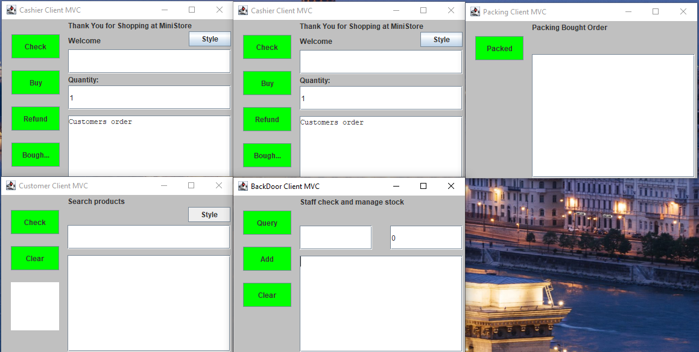

Enhanced an advanced Argos-style inventory system. In order to improve this software, I analysed it and came up with UML designs for suitable new features before implementing the features using object-oriented programming.
Features I added:
Sound Effects system
Ability to buy multiple items
Searching for items system
Refund system
Basic updated visuals and other small fixes
Technologies used: Java, Eclipse IDE for Java, Whitestar UML
View on GitHub